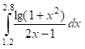

Мета: Розв’язати нелінійні рівняння та здійснити чисельне інтегрування функцій наближеними методами, використовуючи мови функціонального програмування та lambda, let та set! форми.
Вибір середовища та мови функціонального програмування
Для виконання лабораторної роботи було обрано мову Racket. У якості IDE було обрано онлайн компілятор Jdoodle, через простоту та зручность.
Знайти корені нелінійного рівняння виду 3^x - 5x + 2 = 0. Пошук наближеного значення хоча б одного кореня рівняння f(x) = 0 на відрізку [a; b] здійснювати методами перебором та бісекції. Значення a, b інтервалу вибрати самостійно. Порівняти результати розв’язків двома методами.
; Завдання № 1
(define f (lambda(x)(- (* 3 x) (+ (* 5 x) 2)))) ; Функція -3^x-5x+2
(define (func_iter err a b); Методом перебору
(define (func_iter_h a)
(let ((next (f a)))
(cond ((> a b) (- a err))
((< next err) a)
(else (func_iter_h (+ a err)))
)
)
)
(func_iter_h a)
)
(define (task_1 err_iter err_cho a b) ; Функція демонстрації результатів
(let ((result_iter (func_iter err_iter a b)))
(displayln "Метод\t\t\tx\t\tf(x)")
(display "Перебору: ")
(display result_iter)
(display "\t")
(displayln (f result_iter))
(display "\t")
)
)
(task_1 0.001 0.001 -10 10)
Написати процедури для обчислити інтеграла за формулами прямокутників і трапецій. Порівняти результати обчислення.

(define f_in (lambda (x)(/ (log(+ 1 (expt x 2))) (+ 1 (* x 2))))) ;
(define (square_left n) ; Метод лівих прямокутників
(define (sq_h i sum)
(let ((next_sum (+ sum (f_in (* i (/ 1 n))))))
(if (= i (- n 1))
next_sum
(sq_h (+ i 1) next_sum)
)
)
)
(exact->inexact(* (/ 1 n)(sq_h 0 0)))
)
(define (square_right n) ; Метод правих прямокутників
(define (sq_h i sum)
(let ((next_sum (+ sum (f_in (* i (/ 1 n))))))
(if (= i n)
next_sum
(sq_h (+ i 1) next_sum)
)
)
)
(exact->inexact(* (/ 1 n)(sq_h 1 0)))
)
(define (square_mean n) ; Метод середніх прямокутників
(define (sq_h i sum)
(let ((next_sum (+ sum (f_in (/(+(* (- i 1)(/ 1 n))(* i (/ 1 n))) 2)))))
(if (= i n)
next_sum
(sq_h (+ i 1) next_sum)
)
)
)
(exact->inexact(* (/ 1 n)(sq_h 1 0)))
)
(define (square_trape n) ; Метод трапецій
(define (sq_h i sum)
(let ((next_sum (+ sum (f_in (* i (/ 1 n))))))
(if (= i (- n 1))
next_sum
(sq_h (+ i 1) next_sum)
)
)
)
(exact->inexact(* (/ 1 n)(+ (/ (+ (f_in 0) (f_in n)))(sq_h 1 0))))
)
(define (task_2 n) ; Демонстрації результатів
(let (
(s_trape (square_trape n))
(s_left (square_left n))
(s_right (square_right n))
(s_mean (square_mean n)))
(display "n: ")
(displayln n)
(display "Метод трапецій: ")
(display s_trape)
(display "\n")
(display "Метод лівих прямокутників: ")
(displayln s_left)
(display "Метод правих прямокутників: ")
(display s_right)
(display "\n")
(display "Метод середніх прямокутників: ")
(displayln s_mean)
)
)
(task_2 10)
В лабораторній роботі №3 було реалізовано програму на мові Racket у середовищі Jdoodle, що знаходить розв'язки нелінійного рівняння методом перебору; також реалізовано програму, що обчислює інтеграл методами лівих прямокутників та трапецій